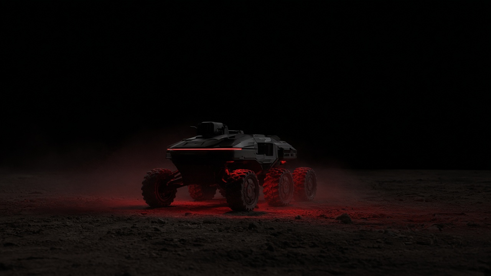
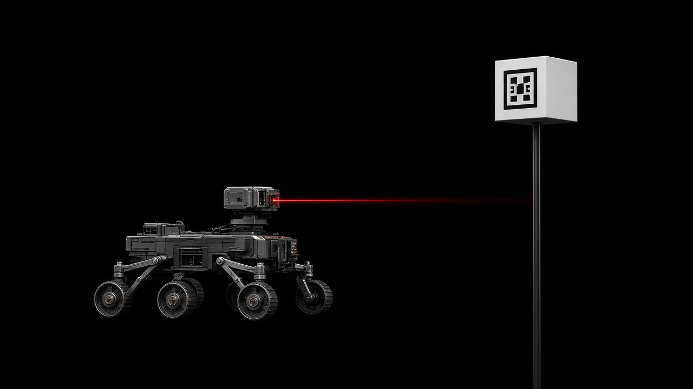
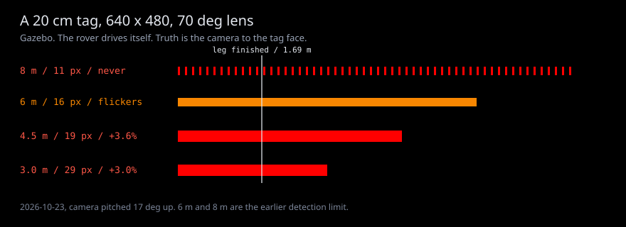
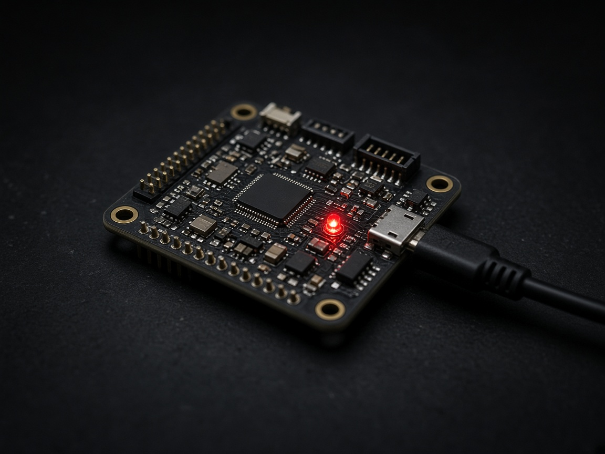
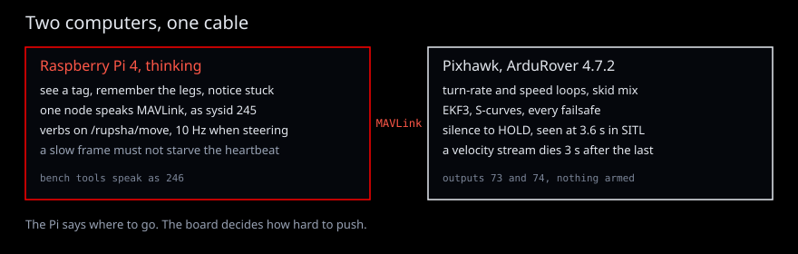
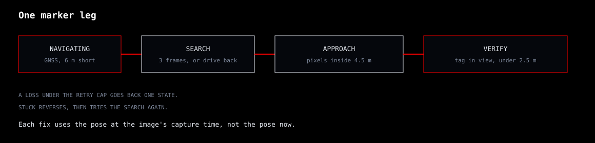
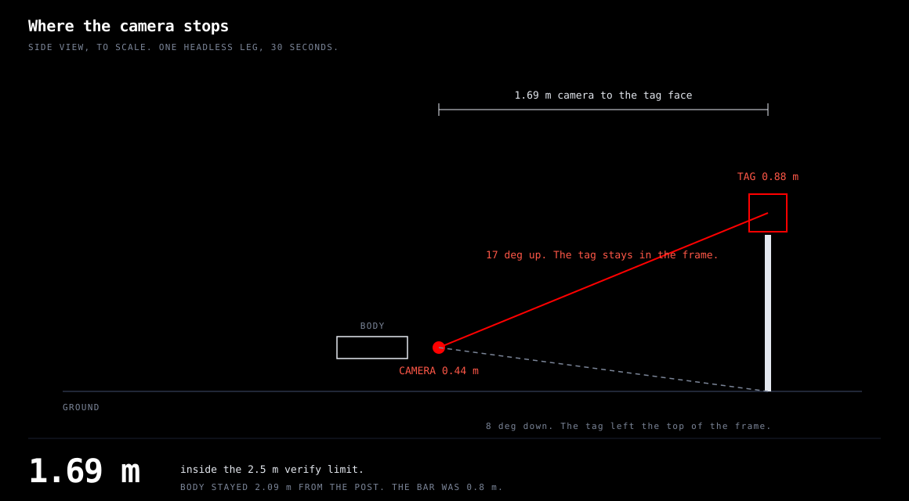
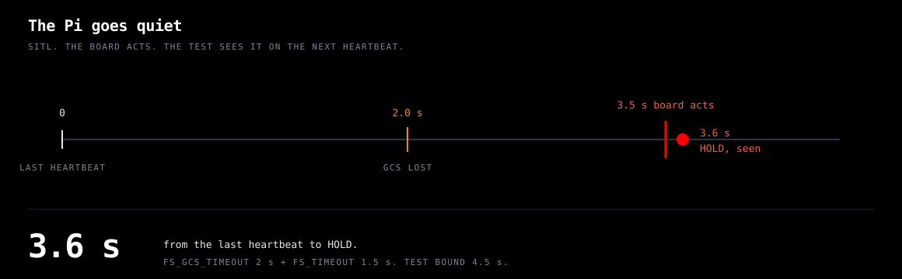

Ackermann contract, Gazebo
pass
One headless run. Speed, steer, ticks, camera, GPS, and a dead link. Scored on Gazebo's pose. test_gazebo_ackermann.py. Not a field number.
An autonomy stack // for a ground rover
Named for the Rupsha, the river that passes Khulna and continues south as the Pasur — the river the Port of Mongla stands on. Mongla is the AUV. This is the same water, on dry land.
The ground slips, a tag is the size of a hand, and the board stops the wheels if the Pi goes quiet. The software has to know which of those just happened, and say so.

test_gazebo_ackermann.py. Not a field number.
turn_to without overshoot. Scored on Gazebo's pose, not the estimate the rover steered by. test_gazebo_lockstep.py.
test_sitl_scenarios.py.
all 1 legs complete. The bar was 2.5 m.
A small Ackermann chassis, drawn because it is not here yet


The chassis being built is 20 cm by 10 cm, one driven axle, a steering servo, a camera, an IMU, and GPS. The lidar that sat on the chassis this shape came from is left off. Nothing has been outdoors. The turn radius is unmeasured.
A 20 cm tag at 8 m is 11 pixels and was never seen. At 6 m it is 16 pixels and flickers. At 4.5 m and 3.0 m it is seen in every frame, and the range comes out about 3 percent long. That error is still unexplained.

The Pi thinks. The board drives. A slow frame must not stall the wheels.

The Raspberry Pi 5 runs vision, localization, and the plan. It sends a speed and a steer. It does not own the motors. A Hailo-8 hat is the same place Mongla puts one. The sim does not pretend to be that hat.
The ESP32 owns the encoder, the IMU, the speed loop, the steering servo, and the stop. If the heartbeat stops, it zeros the speed and centres the steer. In sim that link went stale. A real board has not been timed. The previous Pixhawk, in SITL, went to HOLD at 3.6 seconds. That number is that body.
Tools that talk to the previous Pixhawk use system id 246. System id 245 is the manager. A tool that heartbeats as 245 and then exits latches that board's failsafe even while it is disarmed.

GNSS gets it close. The camera finishes it.

The GNSS point is 6 m short of the post. Search needs three frames of the same tag. One or two frames are forgotten after 15 seconds. Three or more become a place on the ground, and a retry drives back to that place instead of starting the spiral again.
Inside 4.5 m the approach servos on the pixels. Outside that it aims a point short of the tag by the standoff minus the board's waypoint radius. It calls the leg done when the camera is within 1.75 m of the estimate and the tag was seen on this pass.

That run is the previous skid body. The first finish put the camera 1.67 m from the tag and then failed the verify, because the camera was pitched 8 degrees down and the tag had left the top of the frame. That model now pitches the camera 17 degrees up. The next headless run finished in 30 seconds, camera at 1.69 m, body 2.09 m from the post. The Ackermann plant has not run this leg.
The previous board's clock. This chassis uses a heartbeat.

The timeline above is the previous Pixhawk in SITL. On this chassis the contract is simpler: if the heartbeat stops changing, the board zeros the speed and centres the steer. The sim saw that. A real ESP32 has not.
If it was not measured, this page does not claim it
| Claim | Where | Result |
|---|---|---|
| Ackermann contract | Gazebo, one headless run | pass |
| Previous body, 1.00 m/s, heading held | Gazebo lockstep | pass |
| HOLD after the companion goes quiet | SITL | 3.6 s |
| ArUco at 4.5 m, camera 17 deg up | Gazebo, 2026-10-23 | +3.6% |
| ArUco at 3.0 m, same day | Gazebo | +3.0% |
| One marker leg | Gazebo, headless | 1.69 m |
| Body clear of the post | same run | 2.09 m |
| Outdoor runs | the chassis is being built | 0 |
The full table, each row with the test that pins it, is the capability map. When a field run disagrees with a row, the field run wins and the ledger keeps both.
The page is the tour. The rooms are the repository.
| The Shift | why the Pi does not drive the motors |
| Capability map | every claim, and the test beside it |
| Handoff | where the work is, for the next person |
| What was read | MRDT, Michigan, Waterloo's older branch. Nothing copied |
| The source | Muhammad Fahim Faisal. MIT. |